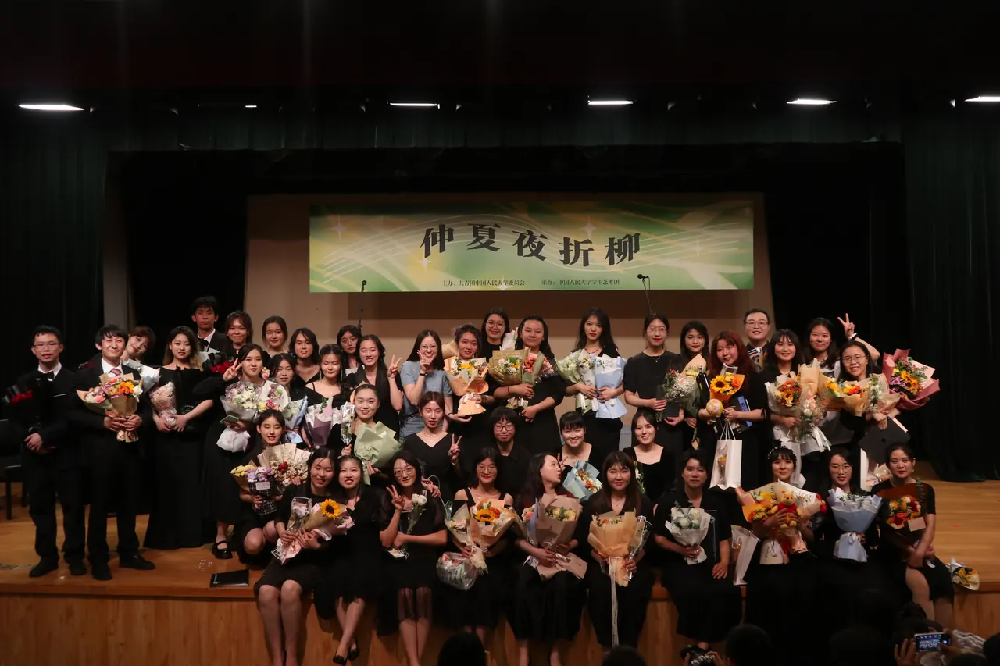

S-01 · SOPRANO
女高音一声部
陈婕王安然蔺宁宁秦颖王敏芊林漪赵时雨孟泽圻
S-02 · SOPRANO
女高音二声部
谢紫珺韩欣妤刘雨晴毛宇扬曹蕾丁当邱远熊心圆张国新赵馨悦林婉婷马文骁郑嘉语谢胜蓝
A-01 · ALTO
女低音一声部
黄殊雅汪咏芝范雨昕姚静萱杜佳缕刘杨欣曾玥林詠瑜郑子玫王怡嘉卢睿菁罗婧涵
A-02 · ALTO
女低音二声部
吴张煜之朱相颖石可玉成婧涵杨镜琪马天翼邓梦岑吴晨韵叶可欣杨皓月常益铭梁棋俊刘奕池王佳怡
四个声部在同一片声场中交汇。名单依照声部分组呈现，保留每一个真实名字。
